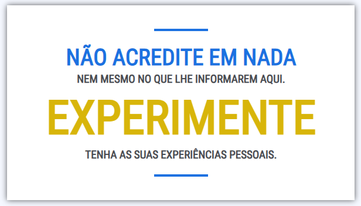
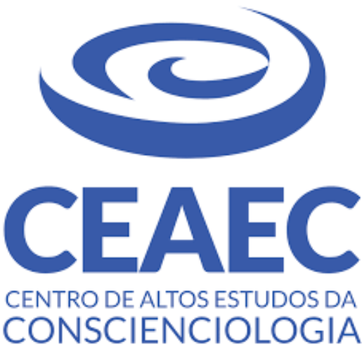
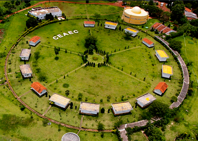
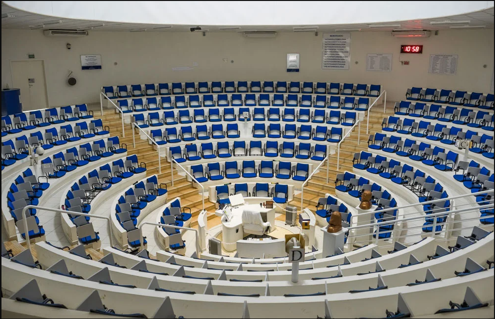
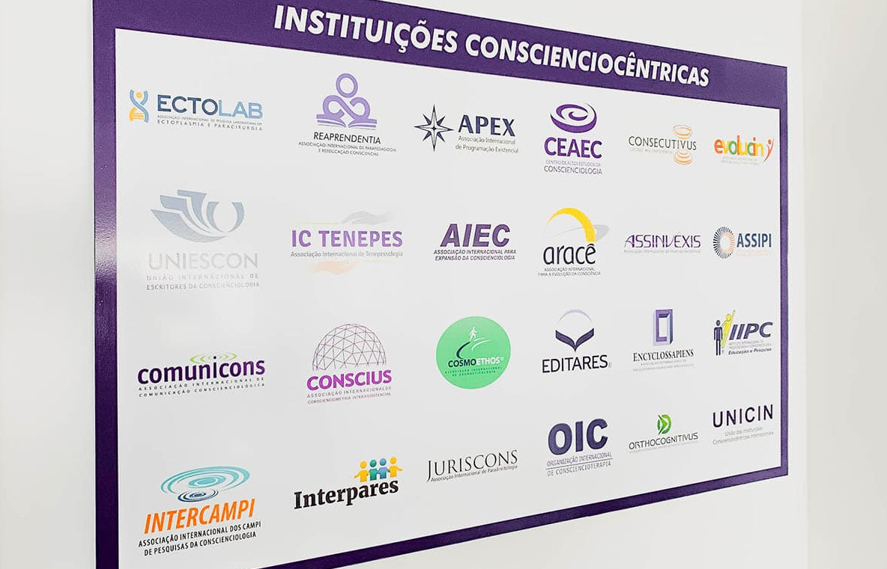

CONSCIENCIOLOGIA
Definição. Conscienciologia: Ciência que trata do estudo abrangente da consciência, executado pelas próprias consciências através dos atributos conscienciais, veículos de manifestação e fenômenos conscienciais multidimensionais.
Definição retirada do livro 'Projeciologia - Panorama das experiências da consciência fora do corpo humano' - 10ª Edição.
O que é a Conscienciologia?
Obs.: O texto abaixo foi retirado do site: www.tertuliarium.org. Acessado em 21/12/2025.
A Conscienciologia é o termo proposto pelo médico e pesquisador brasileiro Waldo Vieira (1932-2015) para definir a nova ciência dedicada ao estudo da consciência, que, dentre outros termos, é aquilo o que se denomina por ego, alma, espírito, essência, eu, individualidade, personalidade, pessoa, self, ser ou sujeito. A Conscienciologia parte do princípio de que a manifestação da consciência vai além do cérebro físico e que é independente do corpo humano. Este fato pode ser verificado, dentre outras maneiras, por meio da experiência fora-do-corpo.
IMPORTANTE: A Conscienciologia não é uma religão. É uma ciência.
A Conscienciologia baseia-se no Paradigma Consciencial como modelo científico para realizar suas investigações. Esse paradigma considera que todo ser vivo possui outros corpos ou veículos (holossoma) para se manifestar, além do corpo físico; interage em múltiplas dimensões (multidimensionalidade); é resultado de múltiplas existências (serialidade) e se interrelaciona a partir das bioenergias.
O princípio da descrença é a proposição fundamental da Conscienciologia na qual o pesquisador ou pesquisadora não deve aceitar nenhuma ideia de maneira apriorista, dogmática, mística, sem reflexão e sem submetê-la a uma análise crítica, desapaixonada e racional. Através do princípio da descrença a pessoa substitui a crença pelo conhecimento advindo da racionalidade e da experiência pessoal. O princípio da descrença representa um desafio prático para todos nós e pode ser postulado pela frase:
Princípio da descrença:

O que é a consciência?
A consciência também pode ser denominada de ego, essência, individualidade, personalidade, sujeito, pessoa, self, ser, sujeito, dentre outros. Eu, você e todos os seres autoconscientes são consciências. Há consciências manifestando-se nesta dimensão física, através do corpo humano. Há também consciências manifestando-se em dimensões não-físicas (extrafísicas) através de outros corpos mais sutis e sofisticados. A consciência é fruto do corpo biológico? Ela se extingue com a morte? Não. Segundo a Conscienciologia, a consciência não é o corpo humano e tampouco é um subproduto da atividade cerebral. A consciência utiliza o corpo biológico na condição de veículo ou instrumento para ela se manifestar na dimensão material. A consciência pode existir independente do corpo humano e além vida humana. A sua consciência existiu antes de você nascer neste atual corpo biológico, de homem ou mulher, e continuará existindo após o descarte e desativação deste corpo. Além disso, a sua consciência pode sair temporariamente do corpo humano através de um fenômeno conhecido por projeção da consciência ou experiência fora-do-corpo. Este fenômeno é estudado pela Projeciologia, uma das especialidades da Conscienciologia.
O que é a Conscienciologia segundo o site da UNICIN
(União das Instituições Conscienciocêntricas Internacionais)
“A Conscienciologia é a Ciência aplicada ao estudo da consciência apresentando forma abrangente, integral, multidisciplinar, multicultural, multidimensional, multitemporal, multiexistencial, holopensênica, holomnemônica, holobiográfica, holocármica, holossomática e, sobretudo, segundo as reações perante as energias imanentes (Eis) e as energias conscienciais (Ecs), bem como os múltiplos estados, níveis de acuidade e condições de manifestação, através das auto e heteropesquisas dos atributos mentaissomáticos, paracerebrais (Paracerebrologia) e fenômenos conscienciais em geral” (VIEIRA, 2018, p. 6.619).
O termo Conscienciologia procede dos vocábulos consciência, com origem no idioma Latim, conscientia (consciência) e, logia, do idioma Grego logos (ciência). Por se tratar de uma ciência, a Conscienciologia não se caracteriza como seita, religião, filosofia ou gurulatria.
Diferencia-se da ciência convencional devido ao paradigma consciencial, fundamentado na consciência e em seus próprios atributos. Apresenta como premissas:
- Holossomática: admite a existência do holossoma, o conjunto de corpos ou veículos de manifestação da consciência, constituído por:
- Soma ou corpo físico;
- Energossoma ou corpo das energias;
- Psicossoma ou corpo das emoções;
- Mentalsoma ou corpo do discernimento.
- Bioenergética: adota a autoexperimentação lúcida das bioenergias por meio do energossoma, discriminando as energias imanentes das energias conscienciais.
- Multidimensionalidade: considera a vivência da consciência não só na dimensão física, mas também em diversas dimensões conscienciais.
- Serialidade: enfatiza a condição multiexistencial da consciência, sujeita a múltiplas vidas humanas em série, intercaladas com períodos intermissivos.
- Autopesquisa: assume o pressuposto de a consciência investigar a si mesma, vivenciando, simultaneamente, o papel de pesquisador e objeto de pesquisa.
- Cosmoética: reconhece a existência de uma ética interligada ao fluxo do Cosmos, portanto mais ampla do que a ética intrafísica. A cosmoética considera a multidimensionalidade e a evolutividade consciencial, atuando como mecanismo balizador da evolução de todos os seres do Universo, estando estes conscientes ou não da ação das leis cósmicas.
- Universalismo: admite existir um conjunto de ideias derivadas da universalidade das leis básicas da Natureza e do Cosmos, sinônimo de antiegoísmo, cosmismo, generalismo e Megafraternidade.
A autopesquisa conscienciológica é teática, caracterizada pela “vivência conjunta da teoria e da prática por parte da consciência” (Vieira, 1997, p. 210). O consenso quanto aos fatos conscienciais autopesquisados é denominado na Conscienciologia de verdade relativa de ponta (verpon), a qual é disseminada por meio da tarefa do esclarecimento (tares), visando a interassistencialidade.
A Conscienciologia não quer provar nada por meio de heteroconvencimentos, cabendo a cada pessoa, por meio de autexperimentos e da aplicação do Princípio da Descrença (PD), comprovar ou renegar as realidades para si própria.
Obs.: O texto acima foi retirado do site da UNICIN: https://unicin.org/conscienciologia/. Acessado em 27/03/2026.
Neologismos, o que são?
A Conscienciologia criou termos próprios para trabalhar de forma mais precisa com os objetos de estudo desse novo paradigma. Assim como ocorre em outras áreas do conhecimento humano — como a Medicina, a Engenharia e a Tecnologia da Informação —, cada ciência desenvolve sua própria terminologia. Com a Conscienciologia não poderia ser diferente, pois ela também é um ramo do conhecimento científico.
Num primeiro momento, esses termos ou neologismos podem causar certo estranhamento, por parecerem complexos. No entanto, à medida que a pessoa se dedica ao estudo da Conscienciologia, essa linguagem vai se tornando familiar e, com o tempo, passa a ser algo natural.
Na Conscienciologia, neologismos são palavras e expressões novas, criadas ou adaptadas para nomear fenômenos, conceitos e realidades da consciência e do parapsiquismo que não encontram termos adequados na linguagem comum, enriquecendo a capacidade de descrever o universo consciencial, como "Holossoma", "Tenepes", "Proexis", "Pensene", "Invéxis", entre milhares outros, essenciais para a comunicação e pesquisa dentro dessa ciência.
Exemplos de neologismos comuns na Conscienciologia:
- Holossoma: O corpo físico + corpos sutis (energético, mental, etc.).
- Invéxis: Inversão Existencial.
- Ofiex: Oficina Extrafísica.
- Tenepes: Tarefa energética pessoal.
- Trafor: Traço Força.
- Trafar: Traço Fardo.
- Dessoma: Des + Soma, ou descarte do soma/corpo físico. Momento da morte.
- Conscin: Consciencia Intrafísica. Somos nós com um corpo físico atuando no planeta Terra neste momento.
- Consciex: Consciencia Extrafísica. São pessoas que já dessomaram, que não têm mais um corpo físico e que estão vivendo no momento, no plano astral.
Waldo Vieira - O propositor das ciências Conscienciologia e Projeciologia
Waldo Vieira iniciou na infância os estudos sobre fenômenos parapsíquicos (percepção extrassensorial, mediunidade, paranormalidade) e tornou-se membro das principais instituições de pesquisa do parapsiquismo, a exemplo da SPR – Society for Psychical Research (Londres, Reino Unido), ASPR – American Society for Psychical Research (Nova York, EUA), Associação Brasileira de Parapsicologia (Rio de Janeiro – RJ) e CEAEC – Centro de Altos Estudos da Conscienciologia (Foz do Iguaçu – PR).
Waldo Vieira escreveu dezenas de livros e centenas de artigos relacionados à pesquisa da consciência para além da matéria ou do cérebro biológico apenas.
A psicografia (escrita mediúnica) de Waldo Vieira, manifesta aos 13 anos, foi aperfeiçoada e, já com 23 anos, quando conheceu o famoso médium Chico Xavier, já estava plenamente desenvolvida.
O primeiro livro psicografado por Waldo Vieira e Chico Xavier foi “Evolução em Dois Mundos”, publicado em 1958.
No Espiritismo, Waldo Vieira psicografou dezenas de obras solo ou em parceria com Chico Xavier.
Em 1966, Waldo Vieira desligou-se do Movimento Espírita para dedicar-se à pesquisa independente
Experiente em pesquisa da projeção consciente (viagem astral, desdobramento) desde os nove anos, Waldo Vieira tinha experiências lúcidas fora do corpo desde o início da década de 1940 e tornou-se a referência mundial em Projeciologia e Conscienciologia.
Na década de 80 Waldo Vieira foi um dos fundadores do IIP, atual IIPC – Instituto Internacional de Projeciologia e Conscienciologia.
Em 2000, Waldo Vieira radicou-se em Foz do Iguaçu, residindo no campus do CEAEC - Centro de Altos Estudos da Conscienciologia, visando a aglutinação de pesquisadores voluntários para expandir a Conscienciologia na Tríplice Fronteira, instalando a Cognópolis - o Bairro do Saber, a Cidade do Conhecimento.
A Cognópolis conta com vinte instituições da Conscienciologia (muitas fundadas por Waldo Vieira), o Hotel Mabu Interludium Iguassu Convention, e projetos em construção: Ágora Cognopolita e Megacentro Cultural Holoteca, projeto concebido por Oscar Niemeyer.
Trecho acima foi retirado do vídeo do youtube Tertúlia 2330 - Antidispersão invexológica (Invexologia)
Obs.: O texto acima foi retirado do vídeo do youtube Tertúlia 2330 - Antidispersão invexológica (Invexologia)
Clique aqui para ir para o vídeo no YouTube.
Mais informações sobre o Waldo Vieira estão na página Projeciologia CLIQUE AQUI para ir para a página.
O CEAEC e as Instituições Conscienciocêntricas (ICs)
 |
 |
 |
CEAEC (Centro de Altos Estudos da Conscienciologia)
O Centro de Altos Estudos da Conscienciologia (CEAEC), é o primeiro e principal campus conscienciológico, é uma organização científica, sem fins lucrativos, não-governamental, apartidária e não-religiosa, criada em 15 de julho de 1995 e dedicada a cursos e pesquisas na área da Conscienciologia, ciência focada no estudo integral da consciência (cada um de nós).
É uma instituição de ensino e pesquisa mantida por voluntários das mais diversas culturas e origens, interessados na ampliação do saber e na produção de conhecimentos. Localizado em Foz do Iguaçu (PR), funciona como uma instituição sem fins lucrativos que promove a autopesquisa e o desenvolvimento parapsíquico.
Site Oficial do CEAEC https://campusceaec.org/campus/. Acessado em 31/03/2026.
ICs = Instituições Conscienciocêntricas
ICs. As Instituições Conscienciocêntricas (ICs) são organizações cujos objetivos, metodologias de trabalho e modelos organizacionais estão fundamentados no Paradigma Consciencial. A atividade principal das ICs é apoiar a evolução das consciências através da tarefa do esclarecimento pautada pelas verdades relativas de ponta, encontradas nas pesquisas no campo da Ciência Conscienciologia e especialidades.
Voluntariado. Todas as Instituições Conscienciocêntricas são associações independentes, de caráter privado, sem fins de lucro e mantidas predominantemente pelo trabalho voluntário de professores, pesquisadores, administradores e profissionais de diversas áreas.
CCCI. O conjunto das Instituições Conscienciocêntricas e dos voluntários da Conscienciologia no planeta compõe a Comunidade Conscienciológica Cosmoética Internacional (CCCI) formada diversas ICs, incluindo a União das Instituições Conscienciocêntrias Internacionais (UNICIN) e a Associação Internacional Editares.
Obs.: O texto acima sobre as ICs foi retirado do site: https://editares.org/ics/. Acessado em 30/03/2026.
Exemplos de algumas ICs:
- ASSIPI - ASSOCIAÇÃO INTERNACIONAL DE PARAPSIQUISMO INTERASSISTENCIAL
- ASSINVÉXIS - ASSOCIAÇÃO INTERNACIONAL DE INVERSÃO EXISTENCIAL
- ECTOLAB - ASSOCIAÇÃO INTERNACIONAL DE PESQUISA LABORATORIAL EM ECTOPLASMIA E PARACIRURGIA
- IIPC -INSTITUTO INTERNACIONAL DE PROJECIOLOGIA E CONSCIENCIOLOGIA
- INTERPARES -ASSOCIAÇÃO INTERNACIONAL DE APORTES INTERASSISTENCIAIS
- OIC - ORGANIZAÇÃO INTERNACIONAL DE CONSCIENCIOTERAPIA

Veja mais sobre as ICS acessando o site da UNICIN https://unicin.org/ics/. Acessado em 01/04/2026.
CCCI
COMUNIDADE CONSCIENCIOLÓGICA COSMOÉTICA INTERNACIONAL
“A Comunidade Conscienciológica Cosmoética Internacional (CCCI) é o conjunto de habitantes, reunião ou agrupamento e a vida intrafísica, em comum, da sociedade de conscins conectadas pelos vínculos conscienciais da Conscienciologia, na cotidianidade diuturna, nesta dimensão humana, material ou terrestre” (VIEIRA, 2023, p. 9.585 a 9.589).
A CCCI é uma comunidade formada essencialmente por conscins intermissivistas, cuja raiz comum é a interassistencialidade exemplificada no vínculo consciencial.
Os integrantes da CCCI encontram-se localizados e atuantes em diversos países, com maior concentração no Brasil. Atualmente (ano-base: 2024), a maior concentração de pessoas vinculadas à Comunidade Conscienciológica está no Bairro Cognópolis, em Foz do Iguaçu, estado do Paraná, Brasil.
“Comunidade Conscienciológica Cosmoética Internacional é o agrupamento populacional de consciências sem restrição geográfica, caracterizado por forte coesão com base no Universalismo, Cosmoética e Maxifraternidade vivenciados e constituindo holopensene catalisador da realização da maxiproéxis grupal, através do sinergismo gerado pela coexistência pacífica e convergência de esforços em prol da evolução consciencial lúcida, segundo a perspectiva do paradigma consciencial” (VIEIRA, 2004, p. 224).